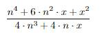
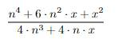

Cuestionario
1) ¿Cuál fué el matemático eccidental que intercambió conocimientos con matemáticos Chinos y
en qué siglo fué?:
a. Matteo Ricci, XVII
b. Pitágoras, XVIII
c. Matteo Ricci, XVIII
d. Euler, X
a. Matteo Ricci, XVII
b. Pitágoras, XVIII
c. Matteo Ricci, XVIII
d. Euler, X
2) ¿Cuál fué la contibución más importante de las matemáticas chinas durante la dinastía Tang,
especialmente en términos de notación numérica?
a. El termino "geométria"
b. −٨
c. Teorema de pitagoras
d. Notación decimal
a. El termino "geométria"
b. −٨
c. Teorema de pitagoras
d. Notación decimal
3) Según el video mostrado en la lección, ¿Cómo se denominan los sistemas númericos como el indo-arábico?:
a. Posicionales
b. Cuneiforme
c. Relaciones
d. Ninguno de los anteriores
a. Posicionales
b. Cuneiforme
c. Relaciones
d. Ninguno de los anteriores
4) Según el video mostrado en la lección, ¿apróximandamento cuánto es √13?:
a. 3.6060
b. 3.4642
c. 3.6055
d. 4
a. 3.6060
b. 3.4642
c. 3.6055
d. 4
5) ¿Cómo se denominan los libros sagrados en los que están consignados los saberes matemáticos de antigua India?:
a. Biblia
b. Sulvasutras
c. Tora
d. Leyes de Manu
a. Biblia
b. Sulvasutras
c. Tora
d. Leyes de Manu
Ingreso de respuestas
Al selecionar cualquiera de las siguientes opciones, perderá 0.25 de su nota:
 
